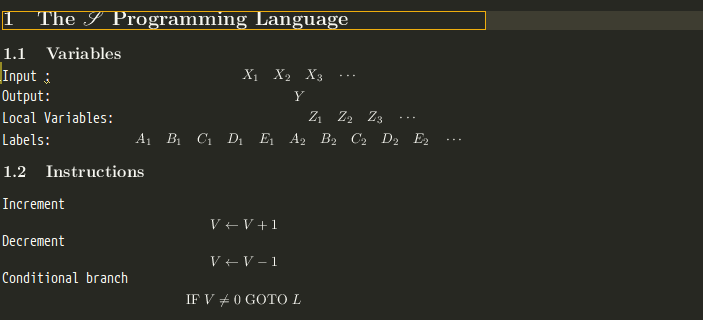

Trying out Emacs (with Spacemacs configuration)
I, with satisfying editing experience with Vim, am always too lazy to try out the well-known editor Emacs. Although Vim as a great editor is fast and powerful in many ways, it as is always treated as the ‘god of editors’. Not the case with Emacs though. In fact, Emacs’s always described as an entire “operating system” by its users simply due to its extensibility and speed come with great software design practice by RMS as well as the power of elisp. (For the “speed” I mean the speed of processing complicated tasks with asynchronous sub-processes)
My biggest issue in the past that prevents me from learning Emacs was the completely different editing experiences and custom configurations come with its design choices. Until I got to know the Spacemacs configuration of Emacs that encouraged me to try it out.
(In case you don’t know that, Spacemacs is an actively maintained Emacs configuration with evil-mode integrated allowing Vim users to “feel at home” right away.)
Another reason that encouraged me to try Emacs out was that I recently started learning Scheme (with SICP, EOPL) and Haskell (with RWS). (not a really good reason as I am still not fluent in either Scheme or Haskell, but people are always willing to touch several new things at a once, aren’t they?)
Also in GUI mode, Emacs is far more powerful than the GVim while editing LaTeX!
